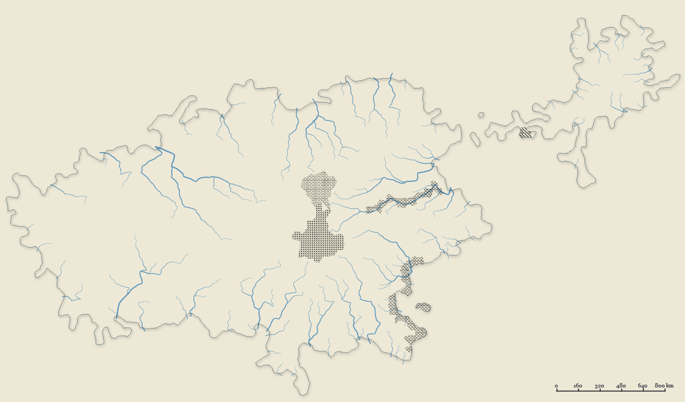
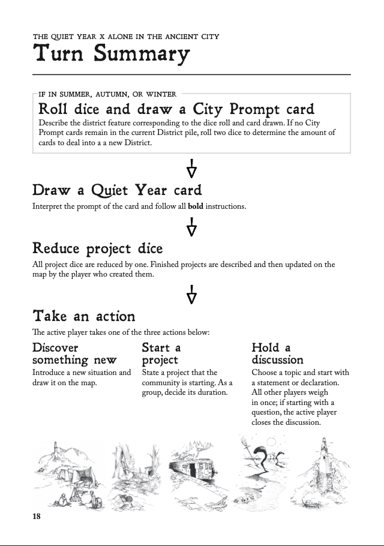
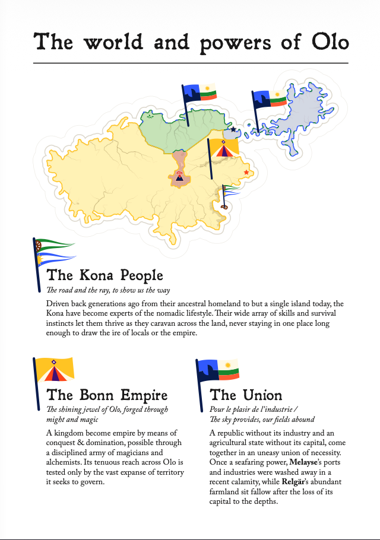
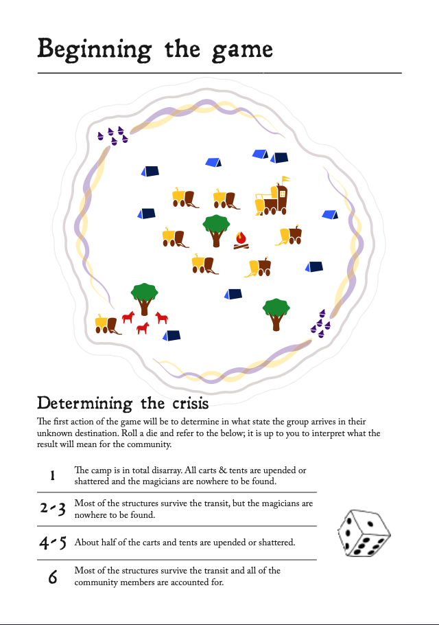

This is a homebrew campaign for a mashup of two TTRPGs I really like: The Quiet Year and Alone in the Ancient City. It is primarily a map-drawing game, developing a settlement in the midst of major changes to the very ground beneath our feet. The campaign backstory I wrote adds detail to the base games and sets up the main conflict between the grand powers of the world. The game can be played with 2–4 people.
I've played this game just once before, with two friends, and it was a lot of fun! It took about an hour, requires a few dice, a deck of cards, and as much or as little drawing supplies as you'd like.

The world of Olo was once, if not peaceful, at least in steady equilibrium. Empires rose and fell, diseases came and went, magic was discovered and integrated into daily life, and Olo provided for its people.
But as you are all-too painfully aware, that reality is no longer our own. Our world is shrinking, the land contracting & subducting beneath our feet. It began with but a few curiosities, noticed only by the most perceptive scholars. Soon, though, city-dwellers’ carts began scraping the houses along their routes. A farmer wakes to a row fewer crops and a slight tilt in their stable, and a miner suddenly notices a newly-exposed vein of ore.
Eventually, these trickles of curiosities grew into a torrent that could no longer be ignored. Routes became impassible, lakes flooded nearby farmlands, and the sea lapped at the crumbling walls of great cities, their structures creaking against each other. Commerce ground to a halt as rulers and commoners alike tried in vain to fight back against that which did not exist.
As with any shrinking resource, those with a surplus hoard even more, while those with little lose the most. For the past year, The Bonn Empire has been employing their best and brightest magicians and alchemists to investigate the phenomenon and preserve their realm… at any cost necessary. A way was found to detect impending ‘rifts’ and replace the shrinking area with land magicked in from elsewhere on the continent. Though it may seem to be so, this land is not infinite, and as the ‘rifts’ increased in size & frequency, so did Bonn’s appetite for new land.
For a while, the other peoples of Olo dealt with the situation as best they could, but sooner or later, calamity comes to us all. Not posessing the magical prowess of Bonn, the neighbouring states of Relgär and Melayse suffered harsh blows. With Relgär’s capital sunken into the earth and Melayse’s shipping and industrial capabilities washed away, the two neighbouring states looked to one another and hastily agreed to combine their remaining territory into The Union, looking for any way to preserve their remaining populace. Time could be found later to argue whether these incidents were the result of ‘rifts’ or Bonn’s aggressive campaign of reclamation...
Finally, there are the Kona. Driven from their ancestral lands generations ago, these hardy, itinerant people have fared the best, moving from place to place and surviving, as they have always done… until recently. As communities across Olo are split & destroyed, many join with groups of roving Kona to take advantage of their survivalist way of life.

While hospitable to outsiders, one Konish caravan is being overwhelmed by those seeking exodus both from the collapsing Union, and from the ever-more repressive & greedy Bonn.
Stuck in a clearing as the tribe tries to co-ordinate a quarrelling group of a hundred or so outsiders, Konish scouts suddenly realise that they’ve been surrounded by an extraction team of the Bonn Empire preparing to magick the fertile lands back to their own territory!
With precious little time to plan, and even less time to gather consensus, Konish leaders confer with exiled Bonn magicians who hastily prepare a spell to transfer the entire caravan to a different location. An incredibly risky gamble, and with no time to make proper preparations, there’s no guarantee where on Olo they will end up, or even if they’ll survive the transit…

END TRANSMISSION